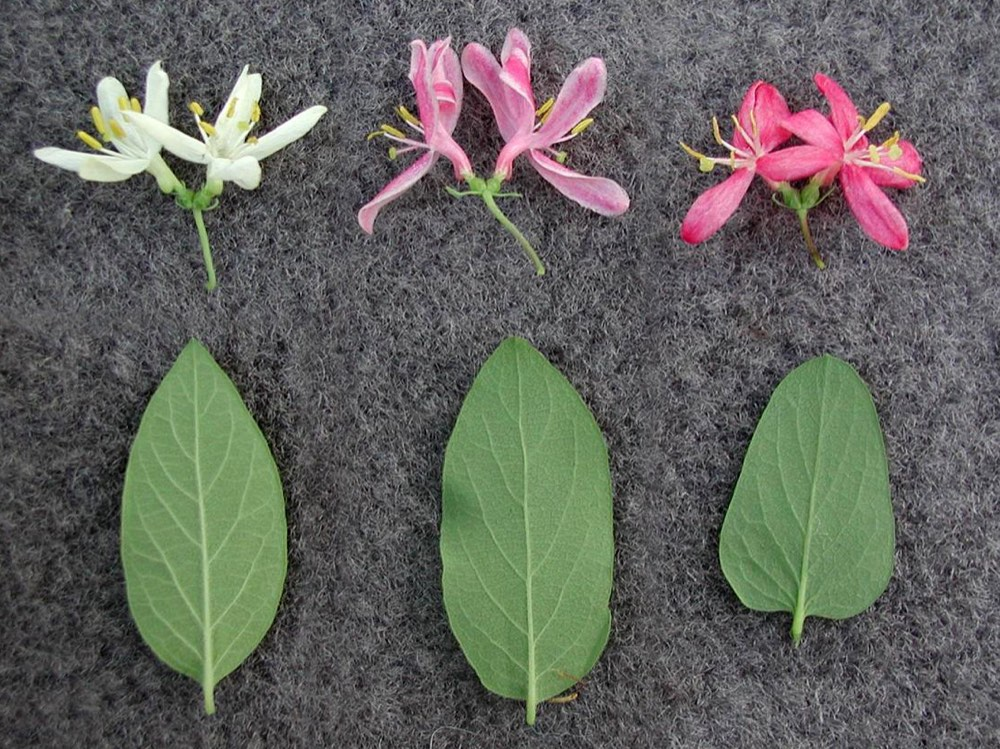

Shrub Honeysuckles
Lonicera maackii, Lonicera morrowii, Lonicera tatarica, Lonicera x bella
Four non-native bush honeysuckles are invasive in Vermont: Amur (Lonicera maackii), Morrow's (L. morrowii), Tatarian (L. tatarica) and Bell's (L. × bella), the hybrid of Morrow's and Tatarian. They are hard to tell apart in the field and are usually managed as a group. Japanese honeysuckle (L. japonica) is a separate invasive vine on the same quarantine list and will get its own note.
- Also called
- Invasive bush honeysuckles, Amur honeysuckle, Morrow's honeysuckle, Tatarian honeysuckle, Bell's honeysuckle
- Kind
- shrub · Caprifoliaceae
- Legal status
- Tier 3 on the Vermont Agency of Agriculture quarantine list (all four shrub species, and Japanese honeysuckle, Lonicera japonica) (checked 2026-10-29)
- Look-alikes
- Lonicera canadensis (American fly honeysuckle); Lonicera oblongifolia (swamp fly honeysuckle; rare in Vermont); Lonicera villosa (mountain fly honeysuckle; uncommon in Vermont)
Pictures

Names
Common names above. "Bell's" or "Bell honeysuckle" is the hybrid. Genus Lonicera.
Range
The Agency of Agriculture describes Tier 3 species as broadly established in Vermont. Not yet recorded here: county-level distribution and records near your parcel (check VTinvasives and the Atlas).
How to identify
- The reliable test is the pith. Cut a twig or small stem. Invasive shrub honeysuckles have hollow pith. Native honeysuckles have solid pith.
- Species differences (Maine guide, secondary): Morrow's has fine hairs on the leaf undersides and white-to-yellow flowers; Tatarian has mostly hairless leaves and pink flowers; Bell's falls in between and is hard to pin down.
- What the VTinvasives page says (read 2026-10-30): deciduous shrubs with opposite, egg-shaped leaves, fragrant flowers and red or orange-red berries growing in pairs, up to 15 feet. Morrow's and Amur have white flowers (Amur's turn yellow with time) and hairy leaves; Tatarian has pink-red, asymmetrical flowers and hairless leaves with a rounded base; Bell's usually has pink flowers; Amur leaves taper to a long point. The native American honeysuckle has yellow tubular flowers and solid white pith. Months for leaf-out, flowers, berries and fall leaf drop are not stated, and not yet filled from a primary key.
- Look-alikes: the native fly honeysuckles L. canadensis, L. oblongifolia (rare in Vermont) and L. villosa (uncommon) have solid pith. Do not remove a shrub identified only by leaf shape; check the pith and, if unsure, ask the county forester or VTinvasives.
Through the year
Dates are typical for Vermont and shift with elevation and year; "approximate" means the source gave a season and the dates are a translation of it.
| When | What | Look for | What to do | Dates |
|---|---|---|---|---|
| All year | survey (control) | Hand pulling can be done any time of year when the ground is soft, especially after rain: pull the whole root, hang the plant from a branch so it does not re-root, and check yearly for seedlings. | - | stated |
| Aug 15 to Mar 31 | survey (control) | Best months for a chemical cut-stump treatment (late summer through winter): cut about 4 inches above the ground and apply an 18 to 21 percent glyphosate solution with a drip bottle within one hour (VTinvasives species page; follow the label). | Cut-stump work in fall or winter; wrap mechanical cut stumps in burlap or thick plastic and cut new growth when checked. | approximate |
| Oct 1 to Nov 15 | survey (control) | Low-volume foliar spray, best left to a contractor, is applied in fall when the native plants are losing their leaves (2 percent glyphosate or triclopyr; calm days only). | - | approximate |
Habitat and spread
To fill: forest edges, old fields and shaded understory; spread by birds eating the fruit. Not yet sourced.
Damage
Introduced invasive plants displace commercial and native species and undermine ecological functions and landowner goals (the Vermont UVA Standards say so when they require a plan to report invasives by species, maturity, distribution and infestation level). Shrub honeysuckles are an understory problem: dense shrubs shade out tree regeneration and native plants. Economic and wildlife-impact detail to add from the fact sheets.
Control (secondary; verify)
- Small stands: pulling or grubbing by hand or with a tool; UVM Extension publishes a non-chemical removal approach. VTinvasives (read 2026-10-30): pull the entire root system when the soil is soft, hang the plant from a branch so it does not re-root, use a wrenching tool on larger plants, and monitor yearly for seedlings.
- Cut stump: mechanical cut-stump control in fall or winter (wrap the stump in burlap or thick plastic and cut new growth); chemical cut-stump treatment late summer through winter (cut 4 inches above the ground, 18 to 21 percent glyphosate by drip bottle within one hour).
- Foliar: low-volume spray in fall when natives are losing leaves, usually by a contractor (2 percent glyphosate or triclopyr, calm days).
- Dense stands: most managers report that herbicide is needed; follow the label and the state's rules near water and wetlands. Pesticide application may require certification from the Agency of Agriculture, Food and Markets.
- Biological control: none known.
- Fire: a poor fit; few Vermont plant communities are fire-adapted.
- Follow-up: expect a flush of seedlings the next year; plan monitoring, and replant the cleared area with other plantings to prevent erosion and crowd out seedlings.
- Plan reporting: if enrolled in Use Value Appraisal, a plan lists invasive species per stand (species, maturity: seedling/vegetative or mature, distribution) and an infestation level (light under 5% cover, moderate 5 to 20%, heavy 21 to 50%, very heavy over 50%). Introduced invasive plant treatment is a recognized treatment type. Routine removal of widely scattered invasives need not be in the plan.
Legal status
Tier 3 on the Agency of Agriculture quarantine list (VTinvasives calls them Class B Noxious Weeds). The rules prohibit cultivation, distribution, transport and in some cases possession of quarantined plants. The Agency enforces to prevent introduction and spread but does not manage established plants; responsibility for established stands rests with landowners. Permits exist for work with regulated plant material when standard management practices cannot be met. Which activities apply to Tier 3 specifically was not stated on the page; check the quarantine rule text before moving or selling plants or soil containing them.
Sources
- Vermont Agency of Agriculture, quarantine list: https://agriculture.vermont.gov/node/11701 (read 2026-10-29)
- Vermont Invasives, Honeysuckles, Shrub: https://vtinvasives.org/node/129 (read 2026-10-30)
- Vermont Invasives, native vs. invasive look-alikes: https://vtinvasives.org/node/645
- UVM Extension, removing invasive honeysuckles without chemicals: https://www.uvm.edu/extension/news/removing-invasive-honeysuckles-without-chemicals
- USDA NRCS Vermont, Brush Management (Honeysuckle) practice sheet: https://efotg.sc.egov.usda.gov/api/CPSFile/21637/314_VT_OTH_Brush_Management-Honeysuckle_2011
- Vermont Fish & Wildlife: https://vtfishandwildlife.com/node/287
- Maine Natural Areas Program guide to Lonicera (species differences): https://www.maine.gov/dacf/mnap/features/invasive_plants/lonicera.htm
- Vermont UVA Minimum Management and Plan Standards 2026, §4.2.4 element 17 (invasive plant reporting)
What this page is based on
Kind of source: mixed (status primary; identification and control secondary)
What was read: Legal status read from the Agency of Agriculture page on 2026-10-29. On 2026-10-30 the VTinvasives species page (node 129) was read through a summarizing fetch: it gives control methods and timing (used in the calendar) but no leaf-out, flower or fruit months, no fall-leaf information and no disposal advice, so there is no identification window here yet. The rest of the identification and control text comes from search summaries of UVM Extension, USDA NRCS Vermont, Maine and Vermont Fish & Wildlife pages, not read in full. Verify against the current VTinvasives fact sheet before relying on a detail.
Last checked: 2026-10-29
Vermont land and forest reference, built 2026-10-31. Rules and dates here are summaries, not legal advice; dates shift with elevation and year. Photo credits · Note: _reference/US-VT/Invasives/Shrub Honeysuckles.md